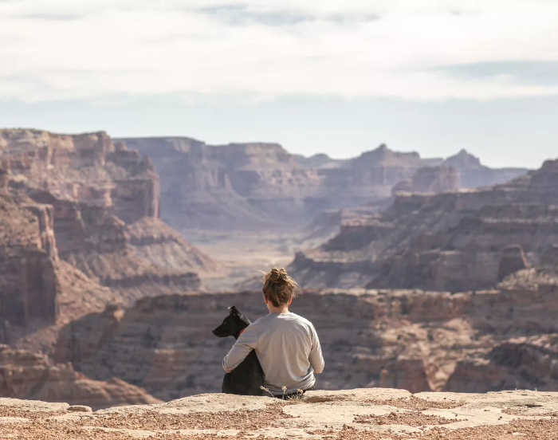

У наш час існує багато тварин, які живуть на вулиці і яким потрібна допомога. Але не завжди люди знають куди звертатися з таким питанням. Саме через це було створено сайт з порятунку безпритульних тварин. Тут ти зможеш не тільки сповіщати про тварин, але й усиновити їх. Ти маєш можливість обирати вік, стать та тип тварини відповідно до своїх вподобань та можливостей. Але не забувай про процедуру отримання дозволу на всиновлення тварини! Також одною з можливостей сайту є запропонування своєї допомоги притулкам, які цього потребують. Ти зможеш на один день стати частинкою команди притулку та допомогти їм робити життя тварин кращим.
Ім’я: Мурчик
Історія: Був знайдений на вулиці серед дороги.
Ім’я: Барсік
Історія: Знайдений у лісі поруч із своєю мамою, яка померла від хвороби..
Ім’я: Сімба
Історія: Врятований з небезпечного середовища.
Ім’я: Мурка
Історія: Знайдена поруч із дорогою, врятована від небезпеки. Любить спостерігати за птахами.
Ім’я: Рекс
Історія: Порятований від зловживання та запущеного стану.
Ім’я: Василий
Історія: Покинутий під будівлею, врятований та став найкращим другом.
Ім’я: Бельчонок
Історія: Втрачений від матері, знайшов особливий догляд та тепло.
Ім’я: Леопольд
Історія: Знайдений на вулиці, любляча сім'я тепер піклується про нього.
Ім’я: Томко
Історія: Порятований з небезпечного середовища. Активний та дружелюбний.